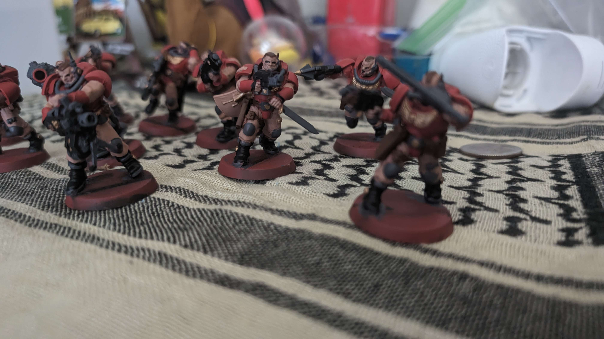

What has the rock been cooking?
I recently listened through the Shining Force 3 OST, and it's full of bangers. I sadly lost my save a long time ago, and losing saves in RPGs is the world's worst feeling lol. Do you spend the 12+ hours just to go back to where you were, or do you just not even bother with it?
I can't even explain how often something like this happens, it's quite a sad time. I recently lost my Grandia 1 save after playing for 10 hours on stream, and I can't be bothered to go through all the cutscenes again, even if the game itself is amazing (second time I played the game).
I believe this is part of the level where you do a fight in the switch yard.
Yea yea yea, but what about the art?
I actually have been doing some art, but nothing I finished due to frustration mostly. I did some practice on face stuff, trying to get spacing on noses and faces.


I did this while I was bored at work. Another one that I did was just a random scene.

But for some digital art, I actually tried working on this one for a bit, but I didn't like it, so I never finished it. This was based on the Valkyrie from Ogre Battle 64.
I did some art outside of digital
A long while ago I was big into 40k tabletop, I played the Blood Angels faction. I sold it years ago, but my brother got me a box set of Kill Team Scouts. Kill Team is designed to be a smaller/shorter game vs 40k, cheaper as there's fewer models. I'm not a professional painter (or artist), and I wouldn't say I did my absolute best, as I just wanted to paint them to play, but here's some pics of it.
What about the art from bflo?
I believe he's done pretty soon with a draft of the shared image, but also sometimes he falls down holes, and I have to go check on him.